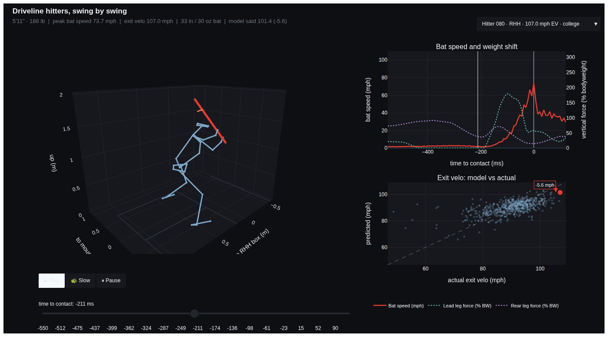

Three panels, one swing
Press play and the whole page moves together
The dashboard is a single self-contained page. A dropdown carries eight hitters spanning a wide range of contact quality, from a 73.5 mph average exit velocity to 107.0, college and high school, right and left handed. Choosing one reloads all three panels.

-
The swing in 3D
Skeleton and bat reconstructed from the raw motion capture, animating through the swing on a batter's box laid out for the hitter's handedness.
-
Bat speed and weight shift
Bat speed against the vertical force each leg is putting into the ground, plotted on time-to-contact so zero is the ball, with a cursor that tracks the animation.
-
Model against reality
Every modelled swing as predicted against actual exit velocity, with the loaded swing highlighted and its error labelled, so one hitter is always read against the population.
Predicting exit velocity
A Gaussian process, chosen by cross validation
Three models were fit to the same eight features and compared on five-fold cross-validated RMSE. The Gaussian process won, and is what the dashboard and the app predict with.
| Model | Cross-validated RMSE (mph) |
|---|---|
| Gaussian process | 6.16 — the model in the dashboard |
| Random forest | 6.57 |
| XGBoost | 6.71 |
Scaling features standardized first — a GP works off distances between
swings, so degrees would otherwise drown out a ratio
Validation 5-fold, shuffled; the scatter plots out-of-fold predictions, never
a swing the model saw in training
A Matérn 3/2 kernel rather than the squared exponential is the deliberate choice: the squared exponential assumes the response surface is infinitely smooth, which is a strong claim about how exit velocity moves as mechanics change. The separate length scale per feature also doubles as a read on which inputs the model actually leans on.
The eight features
Swing mechanics, then contact, then the pitch
| Feature | What it is |
|---|---|
| Peak hand speed | How fast the hands are moving at their fastest in the swing |
| Peak torso rotation | Maximum torso angular velocity, the engine underneath the hands |
| Swing efficiency | Bat speed over hand speed — how much of the hand speed reaches the barrel |
| Early connection | The angle between bat and torso at the start of the swing |
| Attack angle | The bat's path through contact, up or down relative to the ball |
| Contact point | Where the ball met the bat, across the plate and in height |
| Pitch descent angle | What the pitch was doing on the way in |
Percentiles
Where one swing sits in the room
A raw number for peak torso rotation means nothing without a reference, so every feature is also ranked across the swings the model was fit on and shown as a percentile beneath the figure in the app.
Two ways to run it
A page that just opens, and an app that reaches everything
The static dashboard
One HTML file with eight hitters and the plotting library embedded, so it opens in a browser with nothing installed and no network. That is the copy linked from this page.
The Streamlit app
The same three panels with the hitter and swing chosen in the sidebar, so only one swing is ever loaded and any of the 687 is reachable rather than the eight baked into the file. The download, the swing index, and the model fit are all cached, so the wait is a first-run cost.
The motion capture
A 400 MB C3D archive pulled from the OpenBiomechanics release on demand and kept out of the repository. The app asks before fetching it rather than hiding a long download behind a spinner.
-
A diagnostic rather than a blank page
Three separate things make a Streamlit page come up empty: a stale cached frontend, a slow cold import, and a request that never returns. A
doctor.pyscript checks the interpreter, every package, the unpacked archive, and whether GitHub is reachable, printing a line per check. -
Fails loudly instead of hanging
Every startup request carries a timeout, so a firewall that drops packets surfaces as an error rather than an app that never finishes loading.
-
Generated API docs
Every module, constant and function is documented from the source. CI regenerates the reference and fails if it has drifted from the signatures it describes, so it cannot quietly go stale.
-
Hermetic continuous integration
Every push lints, imports each module, validates the notebook, and runs smoke tests that build the figure and the percentile table from synthetic swings — so CI exercises the real code paths without depending on a 400 MB download or on the dataset being reachable.
Eight hitters, from a 73.5 mph average exit velocity to 107.0.
Open the dashboard